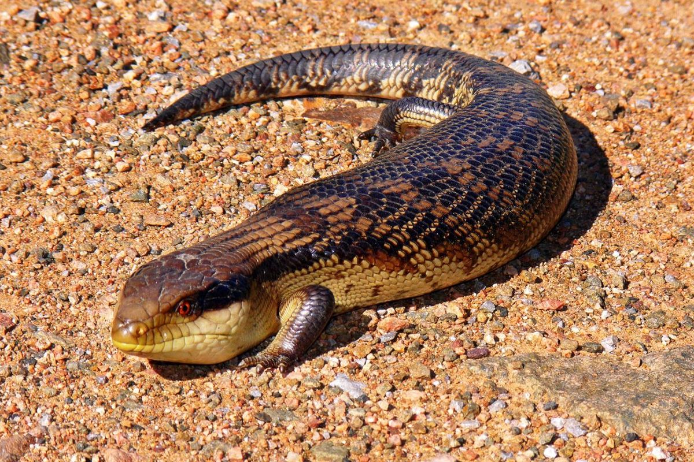

Hewan Ovovivipar
Apa itu Ovovivipar?
Ovovivipar adalah cara berkembang biak hewan yang menggabungkan bertelur dan beranak, di mana telur dibuahi dan menetas di dalam tubuh induk, lalu hewan tersebut "melahirkan" anaknya yang sudah jadi, bukan berbentuk telur. Meskipun terlihat seperti melahirkan, embrio mendapatkan makanan dari cadangan nutrisi di dalam telur, bukan dari induknya.
Contoh Hewan Ovovivipar

Kadal
Kadal adalah kelompok reptilia bersisik berkaki empat (beberapa spesies tidak berkaki dan mirip ular, tetapi bukan ular) yang tersebar sangat luas di dunia. Secara ilmiah, kelompok besar ini dikenal sebagai subordo atau anak bangsa Lacertilia (beberapa literatur menyebut Sauria) yang merupakan anggota dari bangsa reptilia bersisik (Squamata) bersama dengan ular. Secara umum, istilah "kadal" atau "bengkarung" (bahasa Inggris: lizard) juga mencakup kelompok cecak, tokek, bunglon, cecak terbang, biawak, iguana, dan lain-lain. Sedangkan secara sempit, istilah kadal (dan bengkarung) dalam bahasa Indonesia hanya merujuk kepada kelompok kadal yang umumnya bertubuh kecil, padat, bersisik licin dan berkilau, serta hidup di tanah.